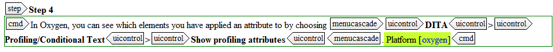

Assign conditions to a part of a topic
- In Oxygen, select the element you want to apply a conditional attribute to.
- In the Attributes list, click in the empty field next to a conditional processing attribute and enter a value.
- Press Enter.
-
In Oxygen, you can see which elements you have applied an attribute to by choosing DITA > Profiling/Conditional Text > Show profiling attributes.
Elements with an attribute receive a default highlight in green:
